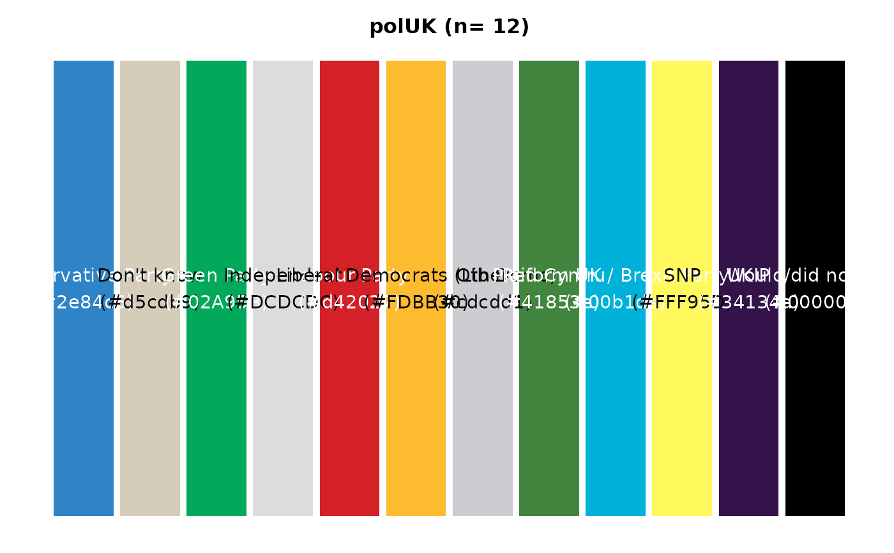
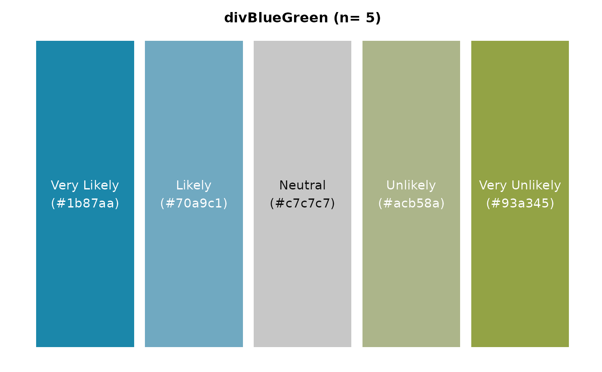

Visualise colour options from a specified palette. This function integrates with colour_pal
to fetch colour data and uses an internal helper function, contrast_test, to ensure text readability on
coloured bars. Useful for previewing colour palettes, including individual colours, full palettes, or
custom selections.
Usage
colour_display(
pal_name,
n = NULL,
assign = NULL,
type = c("discrete_as", "continuous")
)Arguments
- pal_name
A string specifying the name of the palette to visualise. Special option "All" displays all available categorical colours.
- n
An integer for the number of desired colours from the palette. Relevant for sequential and diverging palettes. Defaults to the full length of the palette. If 'n' exceeds available colours, a warning is issued.
- assign
An optional character vector representing levels or categories for the colours. Used for labelling bars in the plot. Length mismatch with 'n' results in warnings.
- type
A character string specifying the type of the colour palette. Options are "discrete_as" and "continuous". The "continuous" type can only be used with sequential or divergent palettes. Defaults to "discrete_as".
Value
A ggplot2 object displaying the colour palette. Each bar represents a colour, labelled with its name and hexadecimal value. For continuous palettes, a colour gradient is displayed.
Examples
# View full pallette
colour_display("polUK")

# View individual colour
colour_display("Jaffa")
# View sequential colour palette with 7 levels on a continuous scale
colour_display("seqGreen", 7, type="continuous")
# View diverging colour pal_name with 5 levels with assigned values
colour_display("divBlueGreen", 5, c("Very Likely","Likely","Neutral","Unlikely","Very Unlikely"))
